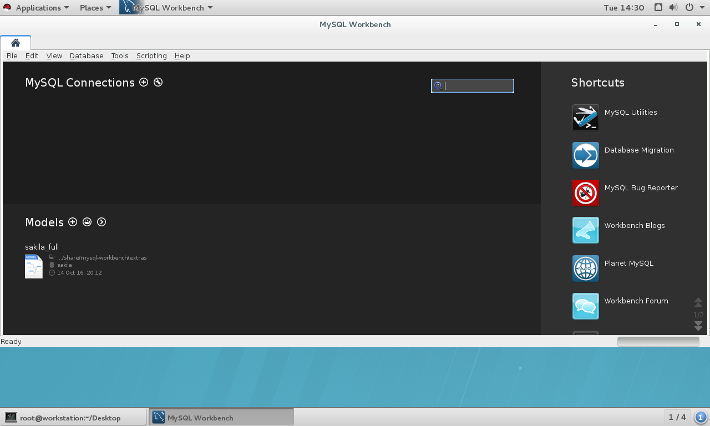

[root@mastera0 ~]# mysql==>未设置密码登陆 Welcome to the MariaDB monitor. Commands end with ; or \g. Your MariaDB connection id is 2 Server version: 5.5.41-MariaDB MariaDB Server Copyright (c) 2000, 2014, Oracle, MariaDB Corporation Ab and others. Type 'help;' or '\h' for help. Type '\c' to clear the current input statement. MariaDB [(none)]> \q Bye [root@mastera0 ~]# mysqladmin -uroot password "uplooking"==>设置密码 [root@mastera0 ~]# mysql -uroot -p==>登陆 Enter password: Welcome to the MariaDB monitor. Commands end with ; or \g. Your MariaDB connection id is 4 Server version: 5.5.41-MariaDB MariaDB Server Copyright (c) 2000, 2014, Oracle, MariaDB Corporation Ab and others. Type 'help;' or '\h' for help. Type '\c' to clear the current input statement. MariaDB [(none)]> show databases==>;分号提交命令 +--------------------+ | Database | +--------------------+ | information_schema |==>临时数据库 | mysql|==>做 mysql 初始化的库 | performance_schema | | test|==>临时共享库,任何人都可以看 +--------------------+ 4 rows in set (0.00 sec) [root@serverg ~]# cat ~/.mysql_history==>查看之前的命令但是不全 Bye
[root@mastera0 ~]# tar -xf mysql-5.6.20-linux-glibc2.5-x86_64.tar.gz [root@mastera0 ~]# cd mysql-5.6.20-linux-glibc2.5-x86_64 [root@mastera0 mysql-5.6.20-linux-glibc2.5-x86_64]# ls bin COPYING data docs include INSTALL-BINARY lib man mysql-test README scripts share sql-bench support-files [root@mastera0 mysql-5.6.20-linux-glibc2.5-x86_64]# cat INSTALL-BINARY ... ... To install and use a MySQL binary distribution, the basic command sequence looks like this: shell> groupadd mysql shell> useradd -r -g mysql mysql shell> cd /usr/local shell> tar zxvf /path/to/mysql-VERSION-OS.tar.gz shell> ln -s full-path-to-mysql-VERSION-OS mysql shell> cd mysql shell> chown -R mysql . shell> chgrp -R mysql . shell> scripts/mysql_install_db --user=mysql shell> chown -R root . shell> chown -R mysql data shell> bin/mysqld_safe --user=mysql & # Next command is optional shell> cp support-files/mysql.server /etc/init.d/mysql.server ... ...
[root@mastera0 mysql-5.6.20-linux-glibc2.5-x86_64]# groupadd mysql [root@mastera0 mysql-5.6.20-linux-glibc2.5-x86_64]# cd .. [root@mastera0 ~]# useradd -r -g mysql mysql [root@mastera0 ~]# cd /usr/local [root@mastera0 local]# mv /root/mysql-5.6.20-linux-glibc2.5-x86_64 . [root@mastera0 local]# ls bin games lib libexec sbin src etc include lib64 mysql-5.6.20-linux-glibc2.5-x86_64 share [root@mastera0 local]# ln -s mysql-5.6.20-linux-glibc2.5-x86_64 mysql [root@mastera0 local]# ll mysql lrwxrwxrwx. 1 root root 34 Dec 11 12:20 mysql -> mysql-5.6.20-linux-glibc2.5-x86_64 [root@mastera0 mysql]# cd mysql [root@mastera0 mysql]# mkdir /data/mysql/data -p [root@mastera0 mysql]# chown mysql. /data/mysql/data [root@mastera0 mysql]# chown mysql. /data/mysql/data -R [root@mastera0 mysql]# ll -d /data/mysql/data drwxr-xr-x. 2 mysql mysql 4096 Dec 11 12:24 /data/mysql/data [root@mastera0 mysql]# scripts/mysql_install_db --user=mysql --datadir=/data/mysql/data --basedir=/usr/local/mysql
[root@mastera0 mysql]# ll /data/mysql/data total 110604 -rw-rw----. 1 mysql mysql 12582912 Dec 11 12:28 ibdata1 -rw-rw----. 1 mysql mysql 50331648 Dec 11 12:28 ib_logfile0 -rw-rw----. 1 mysql mysql 50331648 Dec 11 12:28 ib_logfile1 drwx------. 2 mysql mysql 4096 Dec 11 12:28 mysql drwx------. 2 mysql mysql 4096 Dec 11 12:28 performance_schema drwx------. 2 mysql mysql 4096 Dec 11 12:28 test [root@mastera0 mysql]# vim /etc/my.cnf [client] #如果不认识这个参数会忽略 loose-default-character-set=utf8 loose-prompt='\u@\h:\p [\d]>' socket=/tmp/mysql.sock
[root@localhost MySQL-python-1.2.5]# which mysql_config /usr/bin/which: no mysql_config in (/usr/local/sbin:/usr/local/bin:/usr/sbin:/usr/bin:/root/bin)
[root@localhost ~]# systemctl start mariadb [root@localhost ~]# mysqladmin -uroot password 'uplooking' [root@localhost ~]# mysql -uroot -puplooking Welcome to the MariaDB monitor. Commands end with ; or \g. Your MariaDB connection id is 4 Server version: 5.5.44-MariaDB-log MariaDB Server
Copyright (c) 2000, 2015, Oracle, MariaDB Corporation Ab and others.
Type 'help;' or '\h' for help. Type '\c' to clear the current input statement.
打开数据库连接 db = MySQLdb.connect(host,user,password,database))
使用cursor()方法获取操作游标事务开始 cursor = db.cursor()
执行SQL语句 cursor.execute(sql)
向数据库提交 db.commit()
发生错误时回滚 db.rollback()
关闭连接 db.close()
PHPmyAdmin在线工具使用
PHPMYADMIN 是一个使用 PHP 语言编写的,使用 web 管理 MYSQL 的组件。严格意义上说,它也是一种 MYSQL 的客户端。最近一段时间,出现的很多依靠网站连接 MYSQL 进行管理的产品,在这些“WEB GUI”中,PHPMYADMIN 是使用范围最为广泛的,同时也受到很多 MYSQL 数据库管理员的好评。通过它,你可以非常轻松,非常方便的管理 MYSQL 数据库
2.systemctl start httpd 3.systemctl start mariadb 4.mysqladmin -uroot password uplooking 5.mysql -uroot -puplooking >create database phpmyadmin >grant all on phpmyadmin.* to php@localhost identified by 'uplooking'; >flush privileges;
6.echo hi > /var/www/html/index.html 测试一下web服务是否成功
7.tar jxf /mnt/courses/db100/rhel7.2/materials/phpMyAdmin-4.4.15.5-all-languages.tar.bz2 -C /var/www/html 8.chmod -R 755 html 9.mv config.sample.inc.php config.sample.inc;vim config.inc.php $cfg['blowfish_secret'] = ''; /* YOU MUST FILL IN THIS FOR COOKIE AUTH! */
/* * Servers configuration */ $i = 0;
/* * First server */ $i++; /* Authentication type */ $cfg['Servers'][$i]['user'] = 'root'; $cfg['Servers'][$i]['password'] = 'uplooking'; $cfg['Servers'][$i]['auth_type'] = 'config';
MySQL Workbench 是一款专门为用户提供了用于创建、修改、执行和优化SQL的可视化工具，开发人员可以很轻松的管理数数据。该工具并且提供开发者一整套可视化用于创建、编辑和管理SQL 查询和管理数据库连接。在可视化SQL编辑工作模式下，用户创建表，删除表，修改表信息等只需要使用简单的可编辑列表中完成。
[root@workstation software]# pwd /software [root@workstation software]# ls mysql-workbench-community-6.3.8-1.el7.x86_64.rpm mysql-workbench-community-6.3.8-1.el7.x86_64.rpm [root@workstation software]# rpm -ivh mysql-workbench-community-6.3.8-1.el7.x86_64.rpm warning: mysql-workbench-community-6.3.8-1.el7.x86_64.rpm: Header V3 DSA/SHA1 Signature, key ID 5072e1f5: NOKEY error: Failed dependencies: tinyxml is needed by mysql-workbench-community-6.3.8-1.el7.x86_64 libzip is needed by mysql-workbench-community-6.3.8-1.el7.x86_64 python-paramiko >= 1.15.1 is needed by mysql-workbench-community-6.3.8-1.el7.x86_64 proj is needed by mysql-workbench-community-6.3.8-1.el7.x86_64 libodbc.so.2()(64bit) is needed by mysql-workbench-community-6.3.8-1.el7.x86_64 libodbcinst.so.2()(64bit) is needed by mysql-workbench-community-6.3.8-1.el7.x86_64
[root@workstation workbench]# ls libtomcrypt-1.17-23.el7.x86_64.rpm mysql-workbench-community-6.3.8-1.el7.x86_64.rpm libtomcrypt-devel-1.17-23.el7.x86_64.rpm proj-4.8.0-4.el7.x86_64.rpm libtomcrypt-doc-1.17-23.el7.noarch.rpm python2-crypto-2.6.1-13.el7.x86_64.rpm libtommath-0.42.0-4.el7.x86_64.rpm python2-ecdsa-0.13-4.el7.noarch.rpm libtommath-devel-0.42.0-4.el7.x86_64.rpm python2-paramiko-1.16.1-1.el7.noarch.rpm libtommath-doc-0.42.0-4.el7.noarch.rpm tinyxml-2.6.2-3.el7.x86_64.rpm [root@workstation workbench]# rpm -ivh libtommath* libtomcrypt* python2-crypto* python2-ecdsa* python2-paramiko* tinyxml* proj* Preparing... ################################# [100%] package libtommath-0.42.0-4.el7.x86_64 is already installed package libtomcrypt-1.17-23.el7.x86_64 is already installed package python2-crypto-2.6.1-13.el7.x86_64 is already installed package python2-ecdsa-0.13-4.el7.noarch is already installed package python2-paramiko-1.16.1-1.el7.noarch is already installed package libtomcrypt-devel-1.17-23.el7.x86_64 is already installed package libtommath-devel-0.42.0-4.el7.x86_64 is already installed package proj-4.8.0-4.el7.x86_64 is already installed package tinyxml-2.6.2-3.el7.x86_64 is already installed package libtomcrypt-doc-1.17-23.el7.noarch is already installed package libtommath-doc-0.42.0-4.el7.noarch is already installed [root@workstation workbench]# yum install -y unixODBC libzip Loaded plugins: langpacks, product-id, search-disabled-repos, subscription-manager This system is not registered to Red Hat Subscription Management. You can use subscription-manager to register. Package unixODBC-2.3.1-11.el7.x86_64 already installed and latest version Package libzip-0.10.1-8.el7.x86_64 already installed and latest version Nothing to do [root@workstation workbench]# rpm -ivh mysql-workbench-community-6.3.8-1.el7.x86_64.rpm warning: mysql-workbench-community-6.3.8-1.el7.x86_64.rpm: Header V3 DSA/SHA1 Signature, key ID 5072e1f5: NOKEY Preparing... ################################# [100%] Updating / installing... 1:mysql-workbench-community-6.3.8-1################################# [100%] [root@workstation workbench]# [root@workstation workbench]# rpm -ql mysql-workbench-community |head /usr/bin/mysql-workbench /usr/bin/wbcopytables /usr/lib64/mysql-workbench /usr/lib64/mysql-workbench/libantlr3c_wb.so /usr/lib64/mysql-workbench/libcdbc.so /usr/lib64/mysql-workbench/libcdbc.so.6.3.8 /usr/lib64/mysql-workbench/libctemplate.so /usr/lib64/mysql-workbench/libctemplate.so.3 /usr/lib64/mysql-workbench/libctemplate.so.3.0.0 /usr/lib64/mysql-workbench/libgdal.so.1
SQL Development的基本操作
创建数据库连接
创建新的数据库
创建和删除新的数据表
添加、修改表记录
查询表记录
修改表结构
启动MySQL Workbench
[root@workstation ~]# mysql-workbench

MySQL Workbench工作空间下对数据库数据进行管理之前，需要先创建数据库连接
建立连接前，需要在服务器上给MySQL Workbench授权
[root@mastera ~]# systemctl start mariadb [root@mastera ~]# systemctl stop firewalld [root@mastera ~]# mysql ERROR 1045 (28000): Access denied for user 'root'@'localhost' (using password: NO) [root@mastera ~]# mysql -uroot -puplooking Welcome to the MariaDB monitor. Commands end with ; or \g. Your MariaDB connection id is 3 Server version: 5.5.44-MariaDB-log MariaDB Server
Copyright (c) 2000, 2015, Oracle, MariaDB Corporation Ab and others.
Type 'help;' or '\h' for help. Type '\c' to clear the current input statement.
MariaDB [(none)]> grant all on *.* to root@'172.25.0.10' identified by 'uplooking'; Query OK, 0 rows affected (0.01 sec)